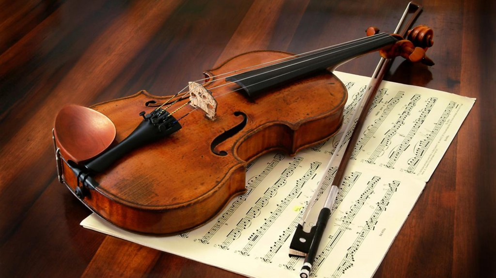

Instrumentos de Cuerda

Guitarra
Marca: Fender
Modelo: Stratocaster
Precio: $500
La guitarra es un instrumento de cuerda popular utilizada en varios géneros musicales.
Es conocida por su versatilidad y rica historia en la música.

Violín
Marca: Stradivarius
Modelo: Clásico
Precio: $2,000
El violín es un instrumento de cuerda clásico conocido por su belleza y expresividad.
Es ampliamente utilizado en la música clásica y otros géneros.